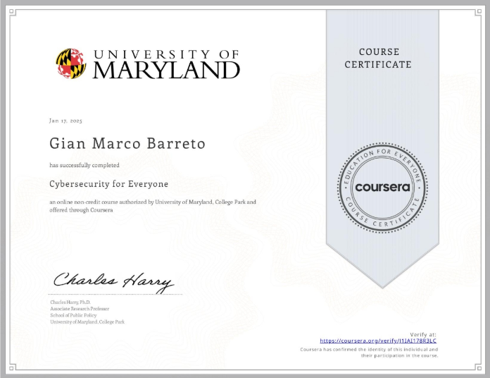

My name is Gian Marco Barreto, I'm 26 years old and I live in Argentina. I am an advanced student of Information Systems Engineering at Universidad Tecnologica Nacional FRCU. My goal is to be a Cybersecurity Analyst, for which I took several courses and made related personal projects.
Computer technician (From 2018 to present)
-Technical support in hardware and software.
-Diagnosis and resolution of computer problems.
-Preventive and corrective maintenance of technological equipment.
-Management of Windows operating system.
-Basic knowledge of networks (router configuration, cabling, etc.).
Installation of security cameras (From 2021 to present)
-Installation and configuration of security camera systems.
-Maintenance.
-Analysis and problem-solving skills.
-Teamwork and interdisciplinary collaboration.
-Attention to detail and organization.
-Customer orientation and effective communication skills.
-Time management and meeting deadlines.
-Adaptability and willingness to learn new technologies.

Non-credit online course covering basic cybersecurity principles (via Coursera).

Course on fundamentals of ethical hacking, computer security and penetration testing (via Udemy).
Secure passwords generator made with Python.
Port scanner made with Python.
Hash cracking with dictionary made with Python.